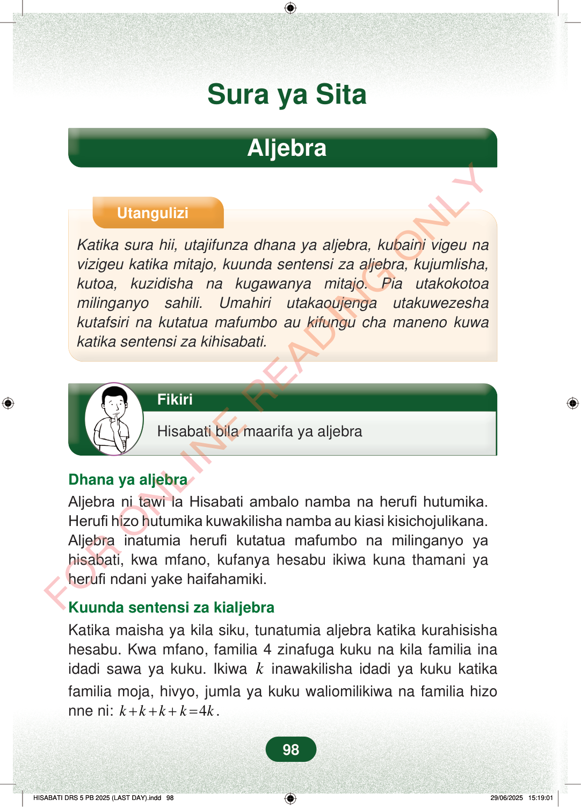

Sura ya SitaAljebraUtanguliziKatika sura hii, utajifunza dhana ya aljebra, kubaini vigeu navizigeu katika mitajo, kuunda sentensi za aljebra, kujumlisha,kutoa, kuzidisha na kugawanya mitajo. Pia utakokotoamilinganyo sahili. Umahiri utakaoujenga utakuwezeshakutafsiri na kutatua mafumbo au kifungu cha maneno kuwakatika sentensi za kihisabati.FikiriHisabati bila maarifa ya aljebraDhana ya aljebraAljebra ni tawi la Hisabati ambalo namba na herufi hutumika.Herufi hizo hutumika kuwakilisha namba au kiasi kisichojulikana.Aljebra inatumia herufi kutatua mafumbo na milinganyo yahisabati, kwa mfano, kufanya hesabu ikiwa kuna thamani yaherufi ndani yake haifahamiki.Kuunda sentensi za kialjebraKatika maisha ya kila siku, tunatumia aljebra katika kurahisishahesabu. Kwa mfano, familia 4 zinafuga kuku na kila familia inaidadi sawa ya kuku. Ikiwakinawakilisha idadi ya kuku katikafamilia moja, hivyo, jumla ya kuku waliomilikiwa na familia hizonne ni:4kkkkk+++=.98
Sura ya Sita
Aljebra
Utangulizi
Katika sura hii, utajifunza dhana ya aljebra, kubaini vigeu na vizigeu katika mitajo, kuunda sentensi za aljebra, kujumlisha, kutoa, kuzidisha na kugawanya mitajo. Pia utakokotoa milinganyo sahili. Umahiri utakaoujenga utakuwezesha kutafsiri na kutatua mafumbo au kifungu cha maneno kuwa katika sentensi za kihisabati.
Fikiri
Hisabati bila maarifa ya aljebra
Dhana ya aljebra Aljebra ni tawi la Hisabati ambalo namba na herufi hutumika. Herufi hizo hutumika kuwakilisha namba au kiasi kisichojulikana. Aljebra inatumia herufi kutatua mafumbo na milinganyo ya hisabati, kwa mfano, kufanya hesabu ikiwa kuna thamani ya herufi ndani yake haifahamiki.
Kuunda sentensi za kialjebra Katika maisha ya kila siku, tunatumia aljebra katika kurahisisha hesabu. Kwa mfano, familia 4 zinafuga kuku na kila familia ina idadi sawa ya kuku. Ikiwa k inawakilisha idadi ya kuku katika familia moja, hivyo, jumla ya kuku waliomilikiwa na familia hizo nne ni: 4 k k k k k + + + = .
98
Sura ya SitaAljebraUtanguliziKatika sura hii, utajifunza dhana ya aljebra, kubaini vigeu na vizigeu katika mitajo, kuunda sentensi za aljebra, kujumlisha, kutoa, kuzidisha na kugawanya mitajo.Pia utakokotoa milinganyo sahili.Umahiri utakaoujenga utakuwezesha kutafsiri na kutatua mafumbo au kifungu cha maneno kuwa katika sentensi za kihisabati.Mtoto anafikiri, ameweka kidole mdomoni na mkono mwingine kifuani.FikiriHisabati bila maarifa ya aljebraDhana ya aljebraAljebra ni tawi la Hisabati ambalo namba na herufi hutumika.Herufi hizo hutumika kuwakilisha namba au kiasi kisichojulikana.Aljebra inatumia herufi kutatua mafumbo na milinganyo ya hisabati, kwa mfano, kufanya hesabu ikiwa kuna thamani ya herufi ndani yake haifahamiki.Kuunda sentensi za kialjebraKatika maisha ya kila siku, tunatumia aljebra katika kurahisisha hesabu.Kwa mfano, familia 4 zinafuga kuku na kila familia ina idadi sawa ya kuku.Ikiwa k inawakilisha idadi ya kuku katika familia moja, hivyo, jumla ya kuku waliomilikiwa na familia hizo nne ni:k + k + k + k = 4k